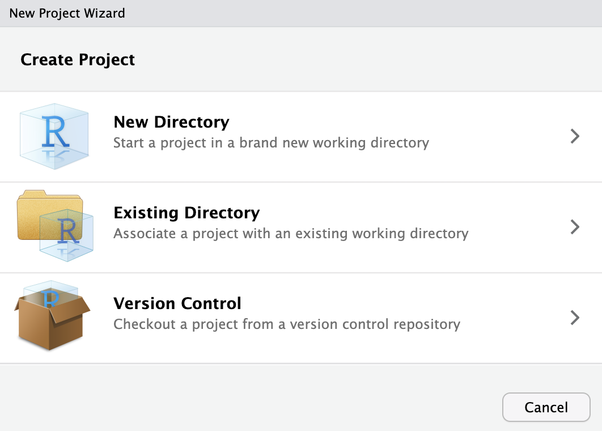
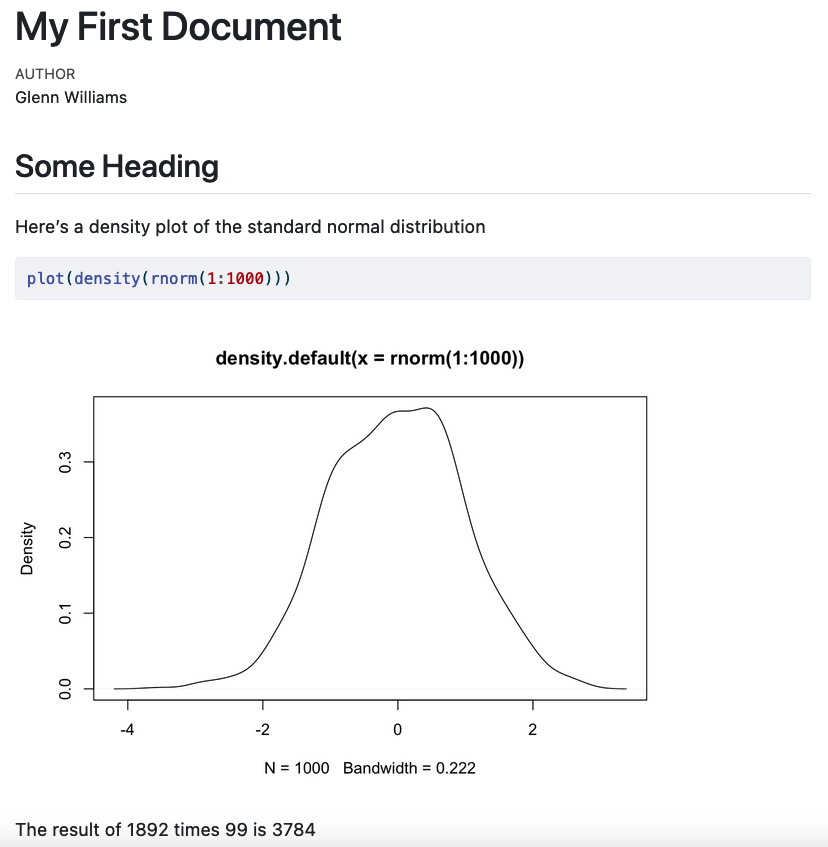

install.packages("tidyverse")1 Getting Started
Before we dive into learning the basics of R, please make sure that you have installed R, RStudio, and Quarto. By the end of this chapter, you’ll understand:
- The layout of RStudio and how to use it for your data needs.
- How file systems work and some best practices for working on projects with R.
- Literate programming using Quarto to create dynamic documents rendered by code.
- How to install and load packages in R, and how they can make working with R much easier.
- How to create and use objects and functions.
1.1 Understanding RStudio
Now that you have R installed, you could jump straight into opening the R Graphical User Interface (GUI). But, as you’ll see in Figure 1.1, Funny-Looking Kid isn’t just the name of this R distribution, but perfectly captures the look of this interface.
You can still get a lot done in the R GUI, but there’s a lot of quality of life improvements we can get from RStudio, including access to syntax highlighting, code completion, a graphical git interface, RStudio Projects, templates for Quarto documents, and a rich markdown editor. None of these things should mean anything to you at this point, but you’ll see how they can be very helpful later. For this reason, we’ll start with RStudio from the beginning.
The RStudio pane can be broken down into a few different sections, as shown in Figure 1.2.
The editor: Type, edit, and save your R code in R files or Quarto documents.
The console: Execute your R code here by typing or copying your code here and pressing
Enter. You can also highlight sections of code in the editor and pressShift + Enterto execute that code in the console.The environment and history: View objects stored in memory for this working session (e.g. values, objects, and user-defined functions etc.). You can also see a history of your commands in the History tab and use the Git interface to save records of your code using the Git version control system.
The viewer: view any files in your working directory, see your last plot from this session, view installed packages on your machine (you can also load them here), view the help documentation for any R commands, and view plots and documents you’ve created in the viewer.
You should always aim to write your code in the editor because you can save it, edit it, and reuse it later. Only write your code in the console if you’re happy for it to be lost as soon as you type it out.
Before we get started writing code in RStudio, please take the time to change some of the defaults in RStudio.
RStudio defaults to saving your workspace to an .RData file when you exit RStudio and to restoring your workspace once you reopen this. This means anything you’ve created will be restored when you start it back up. This is a bad idea because it impedes reproducibility: Imagine you mess around in the console and create or edit an object that changes the results of your analyses. This change will still be there when you restart RStudio, but you’d have no record of it. Instead, it’s better to ensure your code works from scratch in case you move it to a new computer or share it with others.
Remove these defaults by going to Tools, Global Options and deselecting Restore .RData into workspace at startup and from the drop-down menu on Save workspace to .RData on exit to Never.
1.2 Project Management
A large part of creating an effective workflow for your data processing needs revolves around having an effective system for managing the inputs, processing scripts, and outputs associated with your project. By using a logical folder structure and consistent naming conventions you can make working with and managing updates/changes to your project much easier.
1.2.1 File Systems
When working with R, its important to know where the working directory of your project is based. The working directory is essentially the home base for R: where it looks by default when you try to read into R or save data from R to file.
By default in RStudio this depends on how you open RStudio:
- By opening RStudio: the working directory is wherever you installed R on your computer.
- By opening a .R file: the working directory is the location of the file.
- By opening an RStudio Project: the working directory is the location of the project. More on this later!
To find out where your working directory is in RStudio right now, type in the console getwd() and press Enter to get the working directory. (Henceforth, if you see code like this, try it out by either copying and pasting into the console or typing it out and pressing Enter.)
After using getwd() you should see something like "/Users/glenn", with glenn replaced with whatever your home folder is. This means that by default if I want to read some data into R or write it to a file then R will look in this folder to do so. But, you probably want to have a better organisational system than having many files floating around in your home directory. One way around this is to create a specific folder for your project and set your working directory to that folder. Imagine I have a folder in my home directory called “DS-Psych”. I might set the working directory to this location by using setwd("/Users/glenn/DS-Psych"). Now, R will by default read/write files at this location.
But, if you share this with script with someone (or even yourself on say, a computer at work), it won’t work on their machine because you can guarantee they won’t have the same file structure as you. For example, they might have a home directory called rachel or george. Now using setwd("/Users/glenn/DS-Psych") will result in an error.
So, how do we solve the problem of (a) knowing exactly where our working directory is, and (b) ensuring that directory works across different machines? RStudio Projects are the answer.
1.2.2 RStudio Projects
An RStudio Project is a file that can sit in a folder which allows you to open an instance of RStudio in the root (top level) of the folder.
You can create the folder from scratch within RStudio with an associated Project file, or add the Project file to an existing folder within RStudio. To do this click File > New Project and select the relevant option for your use case.

Now, whenever you want to start up RStudio and ensure that your working directory is in the project folder, you simply need to open the RStudio project file that sits in the folder. This will work across different computers for different people, meaning that simply sharing the folder with other people is enough to ensure that R looks in the correct place for files when they run your scripts.
To further ensure that your script runs when, for example, reading in or writing data to file, its good practice to ensure that you way you direct R to files avoids specifying locations that are only present on your computer.
1.2.3 Absolute and Relative File Paths
Imagine you have a folder called analysis on your desktop containing the following items:
inputs/my_data.csvoutputs/my_script.Ranalysis.RProj
The data you want to analyse, my_data.csv, sits in a sub-folder called inputs. You’d like to write a script that reads this data in, creates a graph, and saves that graph in the outputs folder.
You open up RStudio by double clicking on the analysis.RProj file. This ensures that R knows the working directory is set to the root of the analysis folder (i.e. wherever the .RProj file sits). You can read the data into R in one of two ways, using:
Absolute file paths: You specify the exact location of the file on your computer using the full location from your root directory. For me, this would be
/Users/glenn/Desktop/analysis/inputs/my_data.csvRelative file paths: You specify the location of the file relative to your working directory. For all of us, this would be:
/inputs/my_data.csv
Not only are relative file paths shorter and easier to manage, but they will work on anyone’s computer as long as they have your project folder. This makes reproducibility and collaboration much easier.
1.2.4 Naming Conventions
Since you’ll often work with files and folders, it’s a good idea to establish a consistent naming convention. Jenny Bryan has a great presentation on why this matters, based around 3 principles. Make names:
Machine readable: File names should be easily read by computers. Avoid spaces, punctuation, accented characters, and case sensitivity.
Human readable: File names should be easily read by humans. Include a slug to define what a file is or does (e.g.
01_read-files.R). Separate words with a dash to meet the machine readable and human readable criteria. Use underscores to separate slugs (e.g. concepts).Play well with default ordering: Numerics come first. Left pad numbers to ensure proper numeric ordering. Use the ISO 8601 standard (YYYY-MM-DD) for dates.
Examples of poor and good naming conventions are provided below:
| Poor Naming Conventions | Good Naming Conventions |
|---|---|
| 26012022_rp1.csv | 2022-01-26_reading-data_participant-01.csv |
| 26012023_wp1.csv | 2023-01-27_writing-data_participant-02.csv |
| 10.R | 01_read-data.R |
| 1.R | 02_plot-data.R |
| … | … |
| 2.R | 10_fit-models.R |
Notice that with poor naming conventions not using the correct date changes the order of the files for both the .csv files (based on date) and by not left-padding the R files? Also, it’s clear that using too many abbreviations or simply naming files with inscrutable titles will make working with this a nightmare.
1.3 Quarto Documents
Before we start coding, it’s worthwhile explaining how we can create scripts or documents for our code that allow us to perform our data processing tasks.
Traditionally, R users often wrote their code in R Scripts. You can try this now by going to File > New File > R Script. This will open a pane in your editor where you can write your R code. Crucially, you can save this file to your computer, allowing you to return to your work at a later date or to rerun your code. Notice that at the moment the pane is labelled Untitled1. That’s because you haven’t saved your work yet. Go to File, Save or click the floppy disk icon just under the tab for this pane to save your work.
1.3.1 Literate Programming
Scripts are a great way to work with R, but they can be difficult to manage (especially for beginners) and even if these scripts produce files or graphs, you’re still left with the prospect of putting together your scientific outputs in a separate word processor, which often involves a lot of copying and pasting.
Instead, one option is to produce your outputs with your R code embedded within them. This has the advantage of cutting down on transcription errors and time tweaking the output of your documents every time you update something. Let’s imagine you write a paper based on a project with several analyses and containing several plots. Unfortunately, you didn’t realise that one participant should have been excluded from the analyses all along (we all make mistakes). If you made your report manually, you’ve got a lot of manual edits to make. If you let R populate your outputs in the document, it’s as simple as updating a single line of code to remove that participant and rerunning the analyses by pressing a big play button. This should cut down on further human error.
For these reasons, I’m a fan of Quarto: open-source scientific and technical publishing system that allows you to create dynamic documents with content using R, Python, Julia, or Observable code. The advantage of Quarto over other literate programming systems in R (such as RMarkdown) is that if you ever change your programming language to one of the other 3, your workflow stays the same. This reduces overheads to being multilingual.
1.3.2 Creating a Quarto Document
Create a Quarto document by going to File > New File > Quarto Document. You can set the name and author of the document here or define those later on. Keep the default options for the output type and engine for rendering and click Create. This creates a Quarto document with some boilerplate code and text to show you how it works.
Save this document somewhere where you’ll have access to it again if you’d like to keep a record of the code used in the remaining sections of this chapter.
1.3.3 Understanding Quarto Documents
By default, RStudio opens the document using the visual editor. This allows you to type text directly into RStudio in a similar way to how you would with other word processing software. Notice the headings below the tab that allow you to apply different styles to the text, to create lists, links, and include images and tables.
1.3.3.1 YAML Headers
At the top of the document is the YAML header. This stands for YAML Ain’t Markup Language (illuminating, I know). Essentially, this is a highly-readable format for configuring your Quarto document. Options are presented as bare text with a colon and can define the content, look, or behaviour of your document. Here, if we change title: "Untitled" to title: "My First Quarto Document" when you render the file your title will be updated. That’s all we need to know about the heading for now.
1.3.3.2 Markdown
Text is authored using Markdown. (Specifically, the Pandoc flavour of Markdown.) This is a plain text syntax and tool for converting your text to HTML without having to know much, if any, HTML. The idea behind this system is that you can write your content and use some simple syntax to control the formatting of the text. The exact look of it is then handled by a template, several of which come with Quarto. This is different to a WYSIWIG (What You See Is What You Get) editor such as Word where you must define the content, formatting, and presentation at the same time. One advantage of Markdown is that you can create a document based on e.g. the APA manuscript template and then immediately change it to a specific journal’s formatting by swapping out your template. No more manual edits.
For an introduction to Markdown formatting, see https://quarto.org/docs/authoring/markdown-basics.html. But, since we’re using the visual editor this won’t be necessary right now.
1.3.3.3 Embedding Code
Finally, you’ll notice that the Quarto boilerplate includes some code chunks. These can be inserted by clicking the green +C in the header of RStudio, by Cmd + Option + I on a Mac or Ctrl + Alt + I on PC, or by typing:
```{r}
```
Your code then goes in the empty space between the backticks.
Code chunks allow you to write long expressions in R that span multiple lines. The output of that code is then presented in your document immediately below the code that produced it (unless you set options for your code to not show up). Press play on the code chunk or highlight the code and press Cmd + Enter or Ctrl + Enter to run it.
Finally, you can embed R code within text by using surrounding your code with backticks with the inclusion of the language (R) at the header of this. Here’s an example: `r 1 + 1 `. This is useful when including in-text statistics in a document.
1.3.3.4 Rendering Your Document
To create an output file which renders your Markdown and code chunks into a nicely formatted output (like this ebook you’re viewing now), simply click the Render button at the top of your editor. This will create a rendered document in the same location as your Quarto file, rendered in the format you specify in the YAML header. By default, this is an html file. Figure 1.3 shows how the source code and rendered html file compare.

1.4 Packages
While you can get a lot done in R out of the box, many developers have created packages that add additional functionality to R (e.g. new analytical techniques) or make working with R more convenient.
One of the most successful packages is the tidyverse Wickham et al. (2019) suite of packages which bundles together several packages containing functions that make working with your data much easier and make your code more readable. We will primarily focus on using functions from the tidyverse in this course.
To install a package on your computer, simply type install.packages() in your console with the package name in quotes within this function call. Press Enter, and your package will be installed directly in R. You only need to do this once per computer.
Try installing the tidyverse on your computer now.
Every time you open RStudio, be sure to load up the packages you need for your code. Do this now with the tidyverse. Here, you’re asking R to load the package library.
library("tidyverse")1.5 Objects and Functions
You can work directly with data in R, for example using it like a calculator.
4 + 2[1] 6R will be patient and wait for you to finish an expression before executing code. So, if your line of text ends with a mathematical operator, R waits to receive the next number. This can be useful for splitting long expressions across multiple lines:
1 + 2 + 3 + 4 + 5 + 6 + 7 +
8 + 9[1] 45Try typing this out in the console. You’ll notice the > that is normally there when you type changed to a +, indicating that R is waiting for more code.
R also parses text if included in quotes.
"Hello World!"[1] "Hello World!"The same rule applies about finishing expressions here; if you don’t close your quote, then R will wait for you to do so. This means you can spread your text over several lines (by pressing Enter) and R will parse that as one expression. Note with our output we get \n which indicates that a new line follows the comma.
"Hello world, isn't this book taking longer to write than Glenn expected
despite Glenn having alredy done this before and
swearing he learned to not ovedo it?"[1] "Hello world, isn't this book taking longer to write than Glenn expected\ndespite Glenn having alredy done this before and \nswearing he learned to not ovedo it?"But, repeatedly typing data out or referring back to this data is going to be very tedious if we can’t use a shorthand to refer to it. This is where objects come in. Objects are used to store information in R. Crucially, we can perform operations on them by simply using the name of the object.
We assign values to a object using the assignment operator <-. Using this, we give the object its values.
summed_numbers <- 4 + 2By default, R will not return the result of this operation from summed_numbers unless you ask it to do so. To get the result, simply type the name of the object.
summed_numbers[1] 6We can perform operations on these objects after they’ve been created.
summed_numbers * 5[1] 30
Note
You can’t start objects with a number, you can’t use special characters (e.g. %!*), and you can’t include spaces in your object name.
Also, capitalisation matters, so Summed_numbers is not summed_numbers.
R has many mathematical operations built in.
| Operation | Code Example |
|---|---|
| Add | x + y |
| Subtract | x - y |
| Multiply | x * y |
| Divide | x / y |
| Exponentiate | x ^ y |
| Modulus | x %% y (e.g. 5 mod 2 = 1, the remainder of how many times 2 goes into 5.) |
| Integer Division | x %/% y (e.g. 5 int div 2 = 2) |
| Matrix Multiplication | %*% |
It also has many logical operations built in.
| Operation | Code Example |
|---|---|
| Less than | x < y |
| Less than or equal to | x <= y |
| Greater than | x > y |
| Greater than or equal to | x >= y |
| Exactly equal to | == |
| Not equal to | x != y |
| Not x | !x |
| x OR y | x | y |
| x AND y | x & y |
| Is x TRUE? | isTRUE(x) |
These come in pretty handy for performing most operations on our data. If you’re unfamiliar with these, don’t worry. We’ll cover how you might use some of these in a staggered format as you progress through this course. Nicely, R also has a number of functions built in.
Functions in R always end in parentheses, indicating that they take an argument. For example, one of the most basic and important functions in R is c() for concatenate. This allows you to combine many values into a vector or list of values.
When we combine values into an object, this object is stored in our global environment. This means that we can perform operations on the object later on, without the worry of typing our the values again. This is particularly useful if you want to store values from one function (say a statistical test) that you cannot pre-define but that you want to use later on.
Let’s see how this works.
my_values <- c(1, 10, 4, 5)
my_values[1] 1 10 4 5We now have a vector of values stored in one object.
R has other convenient functions built in. For example, we can sum this vector, or get its mean.
sum(my_values)[1] 20mean(my_values)[1] 5Notice how you also don’t have to output things one at a time. R remembers the order of operations.
Functions can have default values or not (requiring you to specify the argument). Above, we passed the the values in my_values to each function as an argument. Later, we’ll look at functions that ask for arguments from separate data types (e.g. numbers and characters) or even multiple arguments.
If you’re unsure what an argument does, you can always ask R what it does, how it does it, and what to pass to it by using ?, e.g. ?mean(). This will bring up a document in the Help window of RStudio.
Using objects allows our code to be flexible, as we can write a script that performs operations on objects that can take any range of values. This, to me, is one of the nicest things about doing your analyses in R. While you may spend more time getting your script up and running in the first place when compared to using point-and-click methods (e.g. in SPSS), if you gain new data or run a new experiment, it’s likely that your script can simply be re-run with no (or few) changes at very little cost to your time.
Now, this part is pretty important but may only be obvious if you’ve programmed in other languages. R is a vectorised language, which means that, as with the sum() function above, R can perform operations on the entire object. So, if you want to increment all values in your object by 1, you can simply tell R to do so in one line of code, without the need for loops or other complex methods.
my_values + 1[1] 2 11 5 61.5.1 Namespace Conflicts
Most of the time, you won’t have any trouble using functions from a loaded package. However, there can be cases when you have two packages installed that use the same function name. To tell R exactly which version of a function to use, we can specify both the package and function name in the form package::function_name(). For example, we can use the group_by() function from the package dplyr by typing dplyr::group_by(). You won’t come across this in this course, as we’ll be using packages that have functions with unique names, but it’s worth bearing in mind if you come across problems with functions you know should work in the future.
1.5.2 Data Types
While we’ve seen that we can create objects containing integers (whole numbers), we can also create objects of other data types. There are 4 main data types that you’ll come across regularly in R:
- Characters: Strings of text, e.g.
"My cats, Bear and Penny" - Numeric: Numbers stored as floats (decimals), e.g.
1,1.5,1.576. - Integer: Numbers stored explicitly as whole numbers using
Lnotation, e.g.1L,2L - Logical: Boolean operators, i.e.
TRUEandFALSE. (AvoidTandFas these can be overwritten.)
Only values of the same data type can be stored together in an object. If you try to concatenate values of different data types you get type coercion. Let’s see the difference in output when concatenating two numbers versus a number and a character.
c(2, 2)[1] 2 2c(2, "Cat")[1] "2" "Cat"Notice that in the first example the two values are unquoted. In the second, the two values are quoted. That’s because since you can only store values of a single data type within an object, when you try to combine a number with a character, R converts all values to character.
Similarly, certain operations only work on specific data types. For example, if you try to perform mathematical operations on invalid data types (e.g. trying to add two characters), R will give you an error.
2 + "Cat"
2 + "2"If you try to run this code, you get a similar error to this: Error in 2 + "2" : non-numeric argument to binary operator. This basically says you can’t add a character to a number.
1.5.3 Data Structures
1.5.3.1 Vectors
We’ve seen already how we can combine values of different data types into one object. In R, these objects are called vectors. We’ve seen already how vectors can be useful in that operations can be applied to every element in the vector using simple mathematical operations. For example, when we want to add 1 to every element of the vector my_numbers, we just type my_numbers + 1. In other, non-vectorised languages, we need to have a way to apply this addition to every element of the vector. This brings us nicely to the idea of indexing values in a vector. How do we get an value back from a vector at a specific location?
Here, we’ll create a vector with the values 3 through 7, and extract the third value from the vector. We can use the : operator to get values between 3 and 7 without explicitly writing them out. We can then extract a value at a specific place in our vector using []. Since R is a 1 indexed language, when we want the third value from a vector, we make this [3]
my_numbers <- 3:7 # values are: 3, 4, 5, 6, 7
my_numbers[3][1] 5R returns the value in the third position, 5.
What if we want to change the value in position 2 to 189? We use indexing to access this value, [2], and assignment to make the value at that position 189, <- 189.
my_numbers[2] <- 189
my_numbers[1] 3 189 5 6 7Finally, we can create vectors from a range of complex in-built (and additional) functions. Let’s look at creating scores from a sequence of numbers, sampling from a set of numbers, and even drawing scores from a normal distribution. These functions all take on multiple named arguments. Remember, you can find out about these functions by using ?, e.g. ?seq().
For this, imagine we want to perform a quick simulation of what IQ looks like for cat and dog owners (assuming people only have one or the other).
Let’s first create some participant IDs ranging from 1 to 100.
participant_id <- seq(from = 1, to = 100, by = 1)
participant_id [1] 1 2 3 4 5 6 7 8 9 10 11 12 13 14 15 16 17 18
[19] 19 20 21 22 23 24 25 26 27 28 29 30 31 32 33 34 35 36
[37] 37 38 39 40 41 42 43 44 45 46 47 48 49 50 51 52 53 54
[55] 55 56 57 58 59 60 61 62 63 64 65 66 67 68 69 70 71 72
[73] 73 74 75 76 77 78 79 80 81 82 83 84 85 86 87 88 89 90
[91] 91 92 93 94 95 96 97 98 99 100Before we get with sampling further data, we’ll set the random seed in R. Since computers are deterministic, nothing is ever actually random with them. Instead, processes that we imagine are random (avoiding heavy philosophical issues here) are created by pseudorandom number generators that take a seed. This is a number used to get the pseudorandom number generator started. We often use these in our code to ensure computational reproducibility. Though the process itself is hopefully random, you might still want to recreate my exact random numbers. Let’s do this.
set.seed(1892)Then lets make some pet ownership codes and sample from this 100 times with replacement.
pets <- c("cat", "dog")
pet_owned <- sample(pets, size = 100, replace = TRUE)
pet_owned [1] "dog" "cat" "dog" "cat" "dog" "cat" "cat" "dog" "cat" "dog" "dog" "cat"
[13] "cat" "dog" "dog" "cat" "dog" "dog" "cat" "dog" "dog" "cat" "cat" "cat"
[25] "cat" "dog" "cat" "cat" "cat" "cat" "cat" "cat" "dog" "dog" "cat" "dog"
[37] "cat" "cat" "cat" "dog" "dog" "dog" "cat" "dog" "cat" "cat" "dog" "dog"
[49] "cat" "dog" "cat" "dog" "cat" "dog" "dog" "dog" "dog" "cat" "cat" "cat"
[61] "cat" "dog" "dog" "dog" "dog" "cat" "dog" "cat" "dog" "cat" "dog" "dog"
[73] "dog" "cat" "dog" "dog" "dog" "cat" "cat" "dog" "cat" "dog" "dog" "cat"
[85] "dog" "dog" "cat" "cat" "dog" "cat" "cat" "dog" "cat" "dog" "cat" "dog"
[97] "cat" "cat" "cat" "dog"Finally, let’s create the IQ scores, sampling from a normal distribution with mean 150 and with a standard deviation of 15.
iq_score <- rnorm(n = 100, mean = 100, sd = 15)
iq_score [1] 119.90419 100.31550 106.28567 100.32896 99.40381 105.60851 69.25938
[8] 88.32001 101.35022 108.49565 79.78903 106.13353 102.67474 97.29907
[15] 88.10597 109.67761 109.34948 102.41409 115.91469 126.64919 80.55541
[22] 93.51404 103.97598 75.78122 97.44319 107.84348 91.55643 81.11721
[29] 108.46863 113.81963 96.25558 94.15728 122.85215 86.35401 109.98973
[36] 104.70575 95.83989 62.79169 90.88445 100.07760 82.95541 95.33197
[43] 114.02527 112.32369 81.45885 111.64807 87.57530 94.64206 99.15243
[50] 61.11503 106.62990 79.72260 100.15081 83.41594 114.31351 99.14609
[57] 84.50973 81.42513 114.89340 124.02161 89.06398 93.27161 94.83063
[64] 106.89741 111.33804 84.21109 126.75998 106.26074 120.37403 77.79786
[71] 128.42155 112.19440 92.08103 104.15516 127.38645 105.28515 90.39646
[78] 96.97260 99.75440 124.81151 107.16399 106.19192 70.66848 78.42079
[85] 94.77819 92.42836 96.64234 91.71500 133.46106 84.11078 88.70980
[92] 80.65210 94.50641 93.65194 87.23135 109.73530 128.65171 91.49707
[99] 76.43452 108.62265Now, we could index these values, change them, or perform operations on them to our heart’s content. Let’s see some useful things we can do if we had data stored in this way.
First, we might want to know how many participants are in our sample. Assume we don’t already know it’s 100, we could do this by asking for the length of the participant ID vector.
length(participant_id)[1] 100We have 100 IDs! But what if someone took the study again? How would we find out the number of unique people in the sample? First, assign participant 100 again to the object, in the 101st place. Then we’ll get the length of this to see that we have 101 values. If we want the unique values, we’ll take the length of the unique values.
participant_id[101] <- 100
length(participant_id)[1] 101length(unique(participant_id))[1] 100Notice that by chaining together two functions we were able to get the length of the unique participants in the object. This function chaining is an important concept in any programming work.
1.5.3.2 Lists
Lists are a way to store multiple vectors of different data types together in one object. Think of it as nesting vectors within vectors (very meta).
You can make these from existing objects or from scratch by defining values within the list. Lists can either have named elements, where we explicitly state the name of each object to be stored in the list, or they can be unnamed. Here, we’ll make a named list from our simulated data.
simulated_data <- list(
participant = participant_id,
pet = pet_owned,
iq = iq_score
)As before, we could print out each element of this list, but it’d produce a lot of output for the console. Instead, let’s check out a new list based on data we create within the list. Let’s look at the qualities of people named Glenn and not Glenn.
person_quality <- list(
glenn = c("handsome", "smart", "modest"),
not_glenn = c("less_handsome", "less_smart", "less_modest")
)
person_quality$glenn
[1] "handsome" "smart" "modest"
$not_glenn
[1] "less_handsome" "less_smart" "less_modest" If we want just Glenn (which most people do, I’m sure) along with the name of the vector, use the same notation as before to access the element in the first location.
person_quality[1]$glenn
[1] "handsome" "smart" "modest" Or we could access it by name:
person_quality["glenn"]$glenn
[1] "handsome" "smart" "modest" If we just want the values in this element (which we often do), we need to use the double bracket notation, [[]].
person_quality[["glenn"]][1] "handsome" "smart" "modest" In doing this we can edit values at specific locations or add elements to the vector just as we did before. However, this requires indexing the values of the correct element in the list, and then accessing the position of the correct value. This requires using a combination of double and single bracket notation.
person_quality[["glenn"]][4] <- "liar"
person_quality[["glenn"]][1] "handsome" "smart" "modest" "liar" As you’ll notice in adding a fourth element to this entry in the list, the data needn’t be square. There are 4 elements in one of the entries of the list, but only 3 in the other.
person_quality$glenn
[1] "handsome" "smart" "modest" "liar"
$not_glenn
[1] "less_handsome" "less_smart" "less_modest" This isn’t the case for the more commonly encountered data structure you’ll use in the course, data frames. We’ll often work with data frames because they’re easy to manage and follow a logical structure that’s analogous to working with a spreadsheet.
1.5.3.3 Data Frames (and Tibbles)
In the real world, if you tested IQs you’d typically have this data stored in a table somewhere prior to reading it into R. So let’s pair the data together into a table in R. One way to do this is to create a data frame. However, if you use the tidyverse set of packages, which we do here, you have access to tibbles. These are just data frames with some sensible defaults like ensuring that R doesn’t convert vectors to different data structures when you subset your table.
Let’s make a tibble from our IQ data from earlier. Notice that we have to subset the participant_id object to be the same length (100 items) as the other objects.
iq_data <- tibble(
participant = participant_id[1:100],
pet = pet_owned,
iq = iq_score
)
iq_data# A tibble: 100 × 3
participant pet iq
<dbl> <chr> <dbl>
1 1 dog 120.
2 2 cat 100.
3 3 dog 106.
4 4 cat 100.
5 5 dog 99.4
6 6 cat 106.
7 7 cat 69.3
8 8 dog 88.3
9 9 cat 101.
10 10 dog 108.
# … with 90 more rowsTibbles are nice to use in that they show you the data type of each column, and by default print the first 10 rows of data only when you print the table. if you want more rows of data, you can ask for it explicitly. Here, n defines the number of rows, while width defines the number of columns. We can set this to Inf or infinity, to ensure all columns are printed.
print(iq_data, n = 12, width = Inf)# A tibble: 100 × 3
participant pet iq
<dbl> <chr> <dbl>
1 1 dog 120.
2 2 cat 100.
3 3 dog 106.
4 4 cat 100.
5 5 dog 99.4
6 6 cat 106.
7 7 cat 69.3
8 8 dog 88.3
9 9 cat 101.
10 10 dog 108.
11 11 dog 79.8
12 12 cat 106.
# … with 88 more rowsUnfortunately, some older functions in R won’t allow you to use a tibble. If this is the case, simply convert your tibble to a data.frame using the as.data.frame() function. Note, we use head() to see the head of our data frame, or the first 6 values. This is necessary here to avoid printing out each row, as we’re not in using a tibble any more. Notice that We’ve assigned the data.frame version of our IQ data to a new object, rather than overwriting the previous object. This is good practice when testing your code, as you never know what might break, resulting in data loss. (Although this wasn’t strictly necessary here.)
iq_data_df <- as.data.frame(iq_data)
head(iq_data_df) participant pet iq
1 1 dog 119.90419
2 2 cat 100.31550
3 3 dog 106.28567
4 4 cat 100.32896
5 5 dog 99.40381
6 6 cat 105.60851There are multiple ways to access data from a tibble or data frame.
1.5.3.3.1 Working with Columns
We can access columns through dollar indexing for a object, or by name or position as we did with lists. (In fact, this works because tibbles and data frames are just square lists!)
iq_data$iq
iq_data[["iq"]]
iq_data[[3]] [1] 119.90419 100.31550 106.28567 100.32896 99.40381 105.60851 69.25938
[8] 88.32001 101.35022 108.49565 79.78903 106.13353 102.67474 97.29907
[15] 88.10597 109.67761 109.34948 102.41409 115.91469 126.64919 80.55541
[22] 93.51404 103.97598 75.78122 97.44319 107.84348 91.55643 81.11721
[29] 108.46863 113.81963 96.25558 94.15728 122.85215 86.35401 109.98973
[36] 104.70575 95.83989 62.79169 90.88445 100.07760 82.95541 95.33197
[43] 114.02527 112.32369 81.45885 111.64807 87.57530 94.64206 99.15243
[50] 61.11503 106.62990 79.72260 100.15081 83.41594 114.31351 99.14609
[57] 84.50973 81.42513 114.89340 124.02161 89.06398 93.27161 94.83063
[64] 106.89741 111.33804 84.21109 126.75998 106.26074 120.37403 77.79786
[71] 128.42155 112.19440 92.08103 104.15516 127.38645 105.28515 90.39646
[78] 96.97260 99.75440 124.81151 107.16399 106.19192 70.66848 78.42079
[85] 94.77819 92.42836 96.64234 91.71500 133.46106 84.11078 88.70980
[92] 80.65210 94.50641 93.65194 87.23135 109.73530 128.65171 91.49707
[99] 76.43452 108.62265All three methods pull out every value from the IQ column as a basic vector. Just like with lists, by using the double bracket method you get just the values, and not the name of the object.
1.5.3.3.1.1 Adding or Removing Columns
To add a row to a data frame, we simply need to specify what we want to add and assign it a new name. Let’s say that we want to add a column that indicates the operating system used by each participant.
We may have this because we made assumptions that people who use Windows, macOS, or the Linux families of operating systems differ in their IQ. This is a silly example for several reasons, not only because you can use more than one system; but we’ll stick with this for now.
Imagine we already have a sample of operating systems to draw from. You don’t need to understand how this works, but briefly I’ve used the inbuilt sample() function to pick from the three names with replacement, skewing the probabilities to select Windows most often, followed by Mac, then Linux. All that matters is that we’re assigning 100 names to an object.
set.seed(1892) # set the random seed
operating_system <- sample(
c("windows", "mac", "linux"),
size = 100,
replace = TRUE,
prob = c(0.5, 0.3, 0.2)
)In the iq_data data set, we can add the new column using the usual assignment operator.
iq_data$operating_system <- operating_system # add new column
iq_data# A tibble: 100 × 4
participant pet iq operating_system
<dbl> <chr> <dbl> <chr>
1 1 dog 120. linux
2 2 cat 100. mac
3 3 dog 106. mac
4 4 cat 100. windows
5 5 dog 99.4 windows
6 6 cat 106. windows
7 7 cat 69.3 mac
8 8 dog 88.3 mac
9 9 cat 101. mac
10 10 dog 108. linux
# … with 90 more rowsNote that you can rename the column to anything you like. But, for consistency, I like to keep the same name as the object which acts as the data source.
Finally, we can remove the new column (and any column) by setting the entire column to nothing (NULL), like so:
iq_data$operating_system <- NULL # remove the column
iq_data# A tibble: 100 × 3
participant pet iq
<dbl> <chr> <dbl>
1 1 dog 120.
2 2 cat 100.
3 3 dog 106.
4 4 cat 100.
5 5 dog 99.4
6 6 cat 106.
7 7 cat 69.3
8 8 dog 88.3
9 9 cat 101.
10 10 dog 108.
# … with 90 more rowsNow the data is back to its original format.
1.5.3.3.2 Working with Rows
We can access rows again using the name or position indexing as above. However, since we’re accessing multiple columns we won’t be able to pull them out as a single vector. This means we can’t use the double bracket notation. Instead, we use single bracket notation and use a comma to specify what we want from rows, and what we want from columns. Remember, rows first, then columns.
Let’s get the first two rows from the pet column. There’s a few ways we could do this:
iq_data[1:2, "pet"]
iq_data[c(1, 2), "pet"]
iq_data[1:2, 2]# A tibble: 2 × 1
pet
<chr>
1 dog
2 cat You’ll notice that R returns a tibble even when we subset this time. That’s because we’ve asked for specific rows from the entire table. If we want just these rows from a column, we can combine the notation with list-style subsetting as we used before.
iq_data[1:2, "pet"]$pet
iq_data[1:2, "pet"][["pet"]]
iq_data[1:2, "pet"][[1]][1] "dog" "cat"We can include multiple columns in the first column index to get specific rows for a subset of columns.
iq_data[1:2, c("pet", "iq")]# A tibble: 2 × 2
pet iq
<chr> <dbl>
1 dog 120.
2 cat 100.Once you know how to index these values, assigning new values to them is just as easy as before. Simply use the assignment operator <-.
This can all be a little unintuitive, so in future chapters we’ll look at how to use the tidyverse functions to subset rows and columns more easily.
1.5.3.3.2.1 Adding or Removing Rows
What if we want to add a new row to our data? This may be less common than adding a new column for data processing purposes, but it’s good to know anyway.
First, we need to know what should go in each cell. Remember that we have to keep the data square, so you can’t have missing values when you add a row. If you don’t have any data, you can just put NA (with no quotations) to keep the data square but to show that you don’t have any value for a given cell.
Let’s assume we want to add a new participant, 101, who has a dog but an unknown IQ. We must define a list of data where we assign values to the columns that match up with our IQ data column headings.
Here, we have to define all our values to be added in parentheses, using the list() function:
- participant number is 101
- pet_id is “dog”
- iq is NA (i.e. unknown)
Then we assign this list of values to the data frame in the 101st row.
We do this like so:
iq_data[101, ] <- list(
participant = 101,
pet = "dog",
iq = NA
)
iq_data# A tibble: 101 × 3
participant pet iq
<dbl> <chr> <dbl>
1 1 dog 120.
2 2 cat 100.
3 3 dog 106.
4 4 cat 100.
5 5 dog 99.4
6 6 cat 106.
7 7 cat 69.3
8 8 dog 88.3
9 9 cat 101.
10 10 dog 108.
# … with 91 more rowsRemember that data frames and tibbles have to be square (i.e. with data in every column). This means if we just assign a participant ID to a column, all remaining rows are completed with NA.
iq_data[102, "participant"] <- 102
tail(iq_data)# A tibble: 6 × 3
participant pet iq
<dbl> <chr> <dbl>
1 97 cat 129.
2 98 cat 91.5
3 99 cat 76.4
4 100 dog 109.
5 101 dog NA
6 102 <NA> NA 1.5.3.4 Matrices
Matrices work very similarly to data frames and tibbles, but they’re even stricter. They can only contain the same data type throughout, so we can’t mix columns containing characters and numbers without converting them all to the same data type. Here’s how you’d make a matrix. However, we won’t go into any other details here. You’ll mainly come across matrices only when doing more advanced statistics by hand or developing your own statistical packages. For most of your data work, this isn’t necessary.
matrix_example <- matrix(
rep(1:25),
nrow = 5,
ncol = 5
)
matrix_example [,1] [,2] [,3] [,4] [,5]
[1,] 1 6 11 16 21
[2,] 2 7 12 17 22
[3,] 3 8 13 18 23
[4,] 4 9 14 19 24
[5,] 5 10 15 20 251.6 Some Final Tips
Finally, a few tips on checking your data before you manipulate your data:
- If you’re unsure what objects you’ve created in a session, either check the environment pane in RStudio or type
ls()to list everything in the global environment. - If you want to know the class of data for some object, use the
class()function (e.g.class(iq_data)). - If you want to know the structure (including object classes) for some object, use the
str()function (e.g.str(iq_data). Nicely,str()also tells you how many arrays are in the object, and how many observations you have in total.
I strongly recommend that you choose a style guide and stick to it throughout when you write your R code. This will make it easier to notice any errors in your code, and increases readability for you and others. Consistency is key here. Since we’re using a tidyverse first approach to teaching R in this course, I recommend the following one by Hadley Wickham, a core developer of the tidyverse.
1.6.1 R Style Guide by Hadley Wickham
The important things to take home are that:
- Use sensible object names: if a column shows, e.g. participant weight, call it
participant_weight. - Use verbs to describe user-defined functions: if you write a function to make all the descriptive statistics you could ever want, call it something like
make_descriptives(). - Use a consistent style, like snake_case, or even camelCase, but don’t mix_snake_and_camelCase.
- Comment your code with descriptions of why you’ve done something using
#: you can often work out how you did it by following your code, but the why is easily lost.